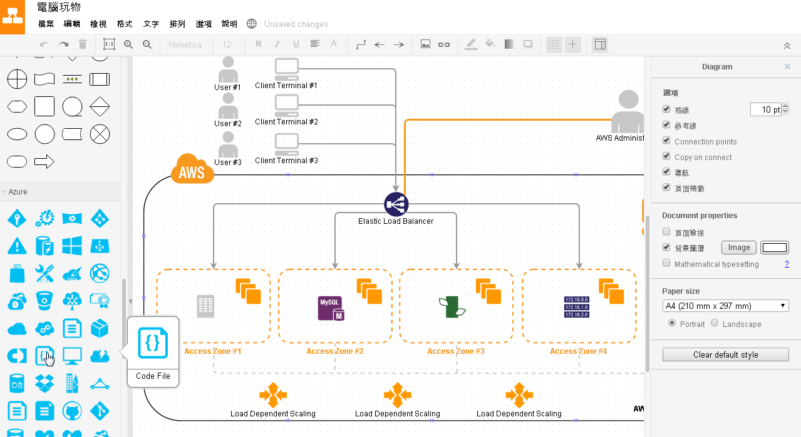
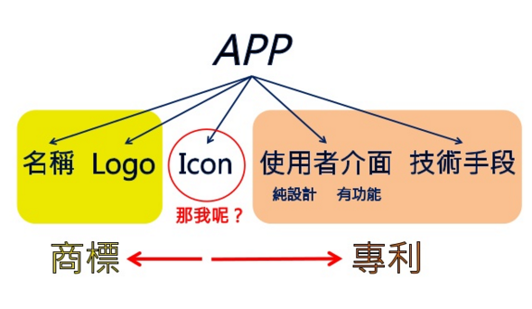
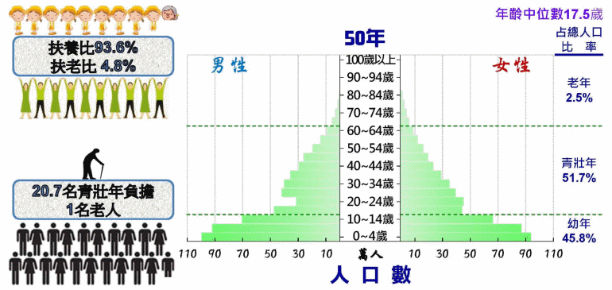
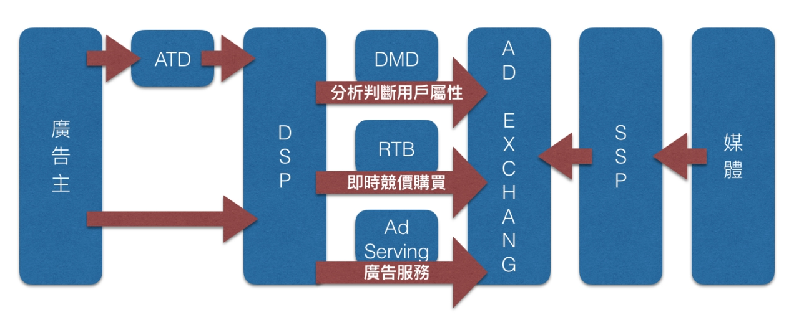
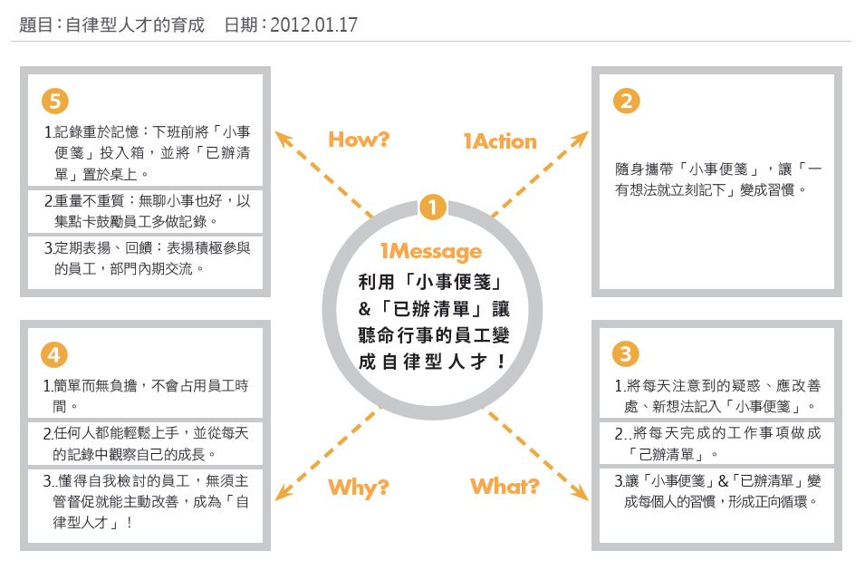
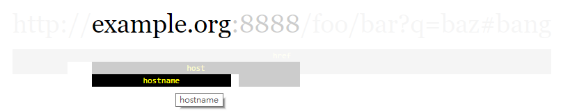
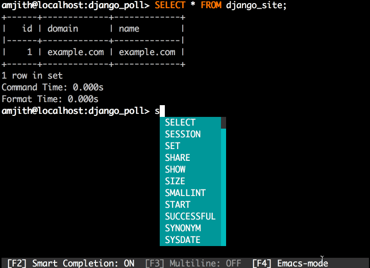
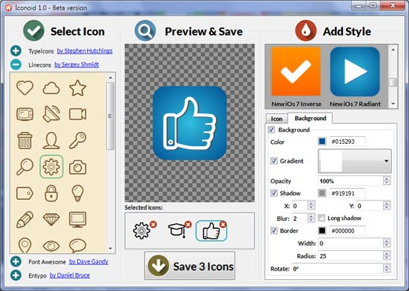
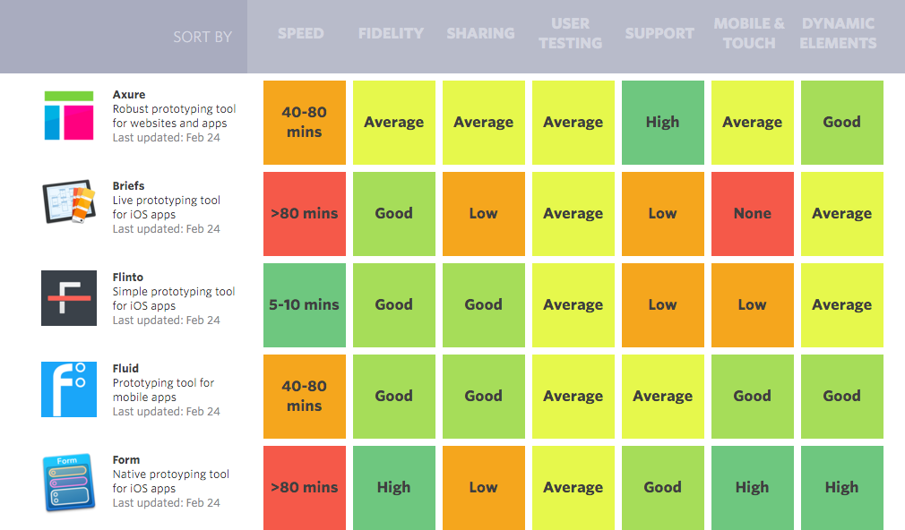
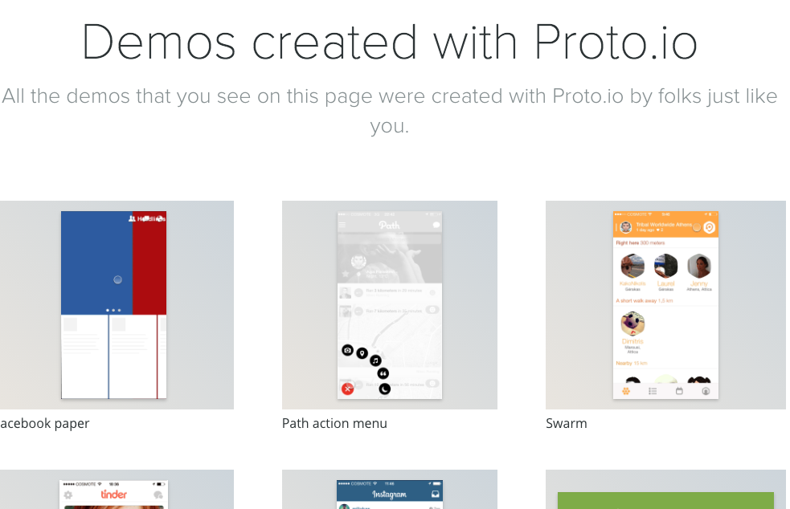

MoClippings #2 創新，是整個團隊的事
發刊日 : 2015/10/31 - 2015/11/10
本期包含：趣事小語、資訊知事、思考＆教育、行銷推廣、專案管理、技術知事
MurMur
- 「創新」是整個團隊的事情。
- 跟波國棒球打輸了，連帶連出刊總結這件事情都 Delay 了！
趣事小語
相關小語來源是這段期間 Twitter 或訂閱的 feedly 上被分析出來的熱門文字。
資訊知事
-
- 【Docker】自動記錄環境參數加速部署效率
- 【Packer】通吃主流平臺映像檔的打包工具
- 【Vagrant】本機端模擬虛擬機器最佳選擇
- 【Datadog】方便使用者快速建立監控儀表板
- 【Sauce Labs】模擬多種前端的線上測試平臺
- 【Codeship】省去許多自行部署第三方套件的麻煩
- 【Twilio】設定觸發條件，透過API發送通知
- 【Runscope】檢視網站健康度，確保API運作順利
每個人都需要準備的一張問題清單：突破難關思考術 - from 電腦玩物
- 站長自己的清單：
- 為什麼想做這件事？
- 對我的人生意義是什麼？
- 目標對象是誰？
- 目標對象有什麼需求？
- 獨一無二的市場特色是什麼？
- 預計什麼時候完成？
- 我可以做的第一步是什麼？
- 我最大不足是什麼？
- 可以跟誰合作？
- 有哪些競爭或借鏡對手？
- 站長自己的清單：
-
- 畫出好看統計圖：ChartBlocks 線上製作統計圖表，讓圖表不再千篇一律
- 最簡單的資訊圖表工具：Easel.ly 讓任何人都能在簡報中用資訊圖表說故事
- 美麗的簡報封面：Canva 日常的設計家：簡報海報、資訊圖表免費製圖
- 套用職場必備圖表範本：creately 線上圖表軟體：免費套用數千資訊圖表範本
- 不可或缺高品質示意圖：十萬 icon 圖示免費下載，傳神的設計與簡報符號圖案
- 同樣不可或缺的好照片：就缺一張好照片？你會優先推薦的免費圖庫：Pixabay
- 值得參考的簡報靈感：2500+創意簡報設計範本免費下載！做出以圖服人 PPT
- 簡報型說明影片：Adobe Voice 說動 PPT 簡報，免費故事化創意簡報 App
- 簡報怎麼配色？到這裡找色彩設計靈感！12個設計師必備配色表網站
- 簡報的好字型：Adobe與Google合推全新中文免費字型思源黑體下載教學
寫英文信最佳辭典： Netspeak 比 Google 翻譯好用
- 「 Netspeak 」是一個免費的線上搜尋辭典，但他不是一般的翻譯辭典，而是可以「搜尋比較」各種英文詞彙、片語、語法在網路上出現過的使用方式，並且「統計」出這個用語的變化型態，還有「分析」他們分別被使用的頻率與情境。
- 網站網址：http://www.netspeak.org/
-
- 
- 工具網址：https://www.draw.io/
- Chrome Plugin 網址： Draw.io Chrome Plugin
-
- 免費、自動化、開放原始碼的SSL認證授權產生
- 現行 SSL CA 認證常常淪為各家個第三方認證單位賺錢的工具，每年費用常常高達數百元美金，所以 Let’s Encrypt 這個組織開始做免費且可被信任的 SSL CA 認證授權。
- 對於需要常常建立不同網站、不同服務的公司，這個服務絕對需要關注。
- 可以思考，網站應用服務使用HTTPS通訊協定，將會是最基本的要求。
免費 Office ！就靠這款微軟 Office 最新 Chrome 套件
- 微軟推出的 Google Chrome 外掛：「 Office Online Chrome 版」，不需要事先安裝 Office 軟體，就能讓你雲端工作時更快速新增 Office 各種文件、編輯已經存在的 Office 檔案
- Office Online Chrome 版
-
- 「目標」⇒「策略」⇒「方案/方法」⇒「執行步驟」⇒「評估」
-
- 這是一個公司網址，一個專案協助做使用者體驗、介面設計、使用者體驗測試、優化的公司
-
- Stephen 將行動電子商務 app 的使用分為四個大階段：Adopt（採納）、Use（使用）、Transact（交易）、Return（本文指的是「再度光臨」），並且分別提出需要注意的設計原則。
- 幾乎整篇都是重點內容，有興趣就直接點進去看吧。
App的智財權保護之道 from Max Chang
- 其中這張簡報說明了關於保護 APP 的三個角度，分別是透過商標、使用者介面專利、技術專利等
- 
- 延伸閱讀：從Call Saver與華碩的抄襲疑雲案，探討App的智慧財產權
圓形錶面 Samsung Gear S2 動手玩 配戴更舒適 操作更人性
- 這隻 Android 智慧手錶平常的使用不仔細看會覺得它只是一般手錶
- 整體的設計除了智慧手錶該有的功能外，外表又不會讓人覺得突兀，該開始好好的思考，智慧手錶與系統之間可以怎麼合作了？！
- Gear S2 售價 9,900元、Gear S2 Classic 售價 10,900元
老年化社會即將來臨，用一張圖來表示
- 
思考＆教育
- 葉丙成：人不卡，不成器
- 職場上要判斷是不是人才，看的是能否解決難題。
- 難題之所以難，是因前人沒碰過，要靠破格的思考和不被失敗打垮的韌性來解決。
- 程式教育最重要的核心，是以程式為媒介，訓練孩子把腦海裡的想法實做出來，並訓練孩子找出所有錯誤點的韌性。
行銷推廣
-
根據內容行銷公司LookBookHQ 的研究，可以總結出以下5點：
用顯示的，不要用說的
因為大多數的人都喜歡多媒體：
＊包含多媒體的新聞稿獲得的回應比純文字的新聞稿高77%
＊包含影片的部落格貼文被連結的機率比純文字的貼文高3倍製作容易消化的資訊
因為沒有人有時間慢慢閱讀：
＊79%的人用翻閱的方式而不是逐字閱讀的方式瀏覽網站
＊美國人每天翻閱的數位化文字平均為100,500個編寫引人注意的標題，以吸引慣於翻閱內容的人的注意
因為大家都很忙：
＊專業人士花51%的時間管理資訊而不是按照資訊作出行動
＊90 % 的受訪專業人士承認曾經在還沒有閱讀的情況下就把重要資訊扔掉說出個人化的故事比較容易讓訊息更突出
因為行銷的世界很嘈雜：
＊2012年在互聯網上發放的廣告5.3兆則
＊估計人們每天看到其中的5,000則行銷訊息把不同型式、相關的內容作包裝組合，較容易被注意
因為互聯網已經塞爆了：
＊每60秒在Google上就發生70萬宗搜尋、60小時的YouTube影片被上載、1.68億封電郵被送出
-
- 主動篩選內容，讓Faccebook頁面符合你的需求
- 人性化分日期、時間篩選文章、圖片、外部連結
- 提供時下受歡迎的照片、外部連結豐富你的FB
- 透過設定連結增進粉絲團、推特的人氣
-
- 程序化廣告就是自動化智慧化的廣告，在合適的時間，用合適的方式，推送給合適的人
- 要實現程序化的神奇魔法，需要起碼解決三方面問題:
- 要對來到頁面的人有充分的瞭解和判斷
- 要有一套規則決定到底呈現哪個廣告
- 需要有個巨大的交易場所，供給買賣雙方石頭剪刀布
- 
- Ad Exchange(簡稱Adx)，是個巨大的競價交易市場，這其中聚集了巨量的廣告主需求及媒體廣告位資源，通過RTB（Real time bidding）即時競價購買的技術實現方式，在100毫秒內完成廣告資源的競價購買，並進行最終展現。
- DSP(Demand side platform)需求方平台：主要的作用就是對接起廣告主的需求，幫助廣告主競價
- SSP(Supply side platform)供給方平台：幫助媒體進行廣告位和相應的流量託管，對接起Adx完成交易
C/P值超高的產品，為什麼客戶會不想買？這3個原因，讓他掏不出錢來！
- C1.外顯單位效益成本：產品和服務夠划算嗎？
- C2.資訊搜尋成本：客戶要花多少力氣了解你的好？
- C3.道德危機成本：客戶和你買東西的風險高嗎？
- C4.專屬陷入成本：客戶過去的努力和投入會報廢嗎？
-
- 一、善用「加入購物車」按鍵附近的設計，提高將商品加入購物車的意願
- 二、購物車頁面盡量減少使用者產生「下次再買吧」的想法，加速決策過程
- 想仔細考慮時卻無法在購物車中看到商品的細節，要在商品頁間切換很麻煩
- 湊不到免運費門檻
- 無法感受到購買商品的折扣優惠
- 無法感受到購買的時間壓力
-
- 1 Message：一句話說明你的提案目的
人資的提案目的是，要利用「小事便箋」與「已辦清單」，讓聽命行事的員工變成自律型人才。
- 1 Action：明確指出第一步「希望對方做的事情」
建議的行動是，要求員工隨身攜帶「小事便箋」，讓「一有想法立刻記下」變成習慣。
- 2W1H：說明提案內容（What）、提案理由（Why）、執行方式（How），分別以3點陳述。
- 
- 1 Message：一句話說明你的提案目的
-
- 對記者來說，「效率」就是一切
- 提高「效率」，從邀請函與 follow call 開始，邀請函內重要的基本資訊必須清楚，像是：
- 活動主旨是什麼？
- 時間 / 地點為何？
- 有誰會出席？
- 產品發表會中，記者的需求為何？通常在產品發表會中，最在乎 3 個要件：
- 準時
- 訊息
- 畫面
- 取得「訊息」的第一步：新聞稿，其內容包括：
- 產品的特色整理
- 規格 / 數據
- 販售資訊
- 長官引言
- 表格
- 聯訪：爆點「訊息」的來源，關於聯訪的安排，以下 2 點建議：
- 電視聯訪：舞台活動後立刻在主舞台上進行為佳
- 平面聯訪：有小房間開小房間，沒小房間拿麥克風
- 舞台表演的「畫面」安排，關於舞台活動，有 3 點建議：
- 舞台表演適度就好，記者只會用最精采的那幾秒鐘
- 名人分享適量就好，記者只會用最有名的那一兩位
- 活動貴在精、不在長，把時間留給體驗和聯訪
- 產品發表會的舞台可避免以下 3 樣東西：
- 噴乾冰
- 噴彩帶
- LED 螢幕
- 產品體驗區的「畫面」安排，確保記者工作的基本效率與流暢：
- 確認產品的狀態，並提供足夠的實機
- 注意區域動線規劃，避免讓所有人擠在一起
- 體驗區產品擺放可視情況適度分散
- 體驗區應避免雜亂的燈色
- 留意體驗區的燈光位置與方向
-
- 記載2015年在社群上爆紅的相關事件及事件爆紅成因分析。
專案管理
- 從產品經理的角度算一算：做一個App需要多少錢？
- 作為互聯網從業者，被外行的朋友們問及最多的問題是“做一個網站需要多少錢？”或者“做一個App需要多少錢？”。作為做過完整網站項目和APP的人，今天從產品經理的角度，一起來算一下中小型App從無到有需要做哪些工作，以及為達成使命，需要付出多少金錢代價。
技術知事
開發心法
Writing Reviewable Code - 寫一個可以被檢視審視的程式碼
- Each commit should be as small as possible, but no smaller.
- 盡可能的讓每個的 commit 小一點
- The smallest a commit can be is a single cohesive idea: don’t make commits so small that they are meaningless on their own.
- 每個 commit 盡可能的只做一件事情，且與 commit 的訊息相同的事情。
- There should be a one-to-one mapping between ideas and commits: each commit should build one idea, and each idea should be implemented by one commit.
- 想做的一件事情需要可以與 commit 間有所對應，且要是一對一的直接對應。
- Turn large commits into small commits by dividing large problems into smaller problems and solving the small problems one at a time.
- 把很大的 commit 切割成小的 commit，把大問題切割成小問題，每次都解決小問題。
- Write sensible commit messages.
- 撰寫真的讀的懂得 commit 訊息。
- Each commit should be as small as possible, but no smaller.
-
- Code Review 的好處
- 發現錯誤：一個人的思考總是會不可避免地出現一些紕漏，而這些紕漏在另一個人眼中也許顯而易見。
- 保持代碼風格統一：對於整個團隊來說，代碼風格的統一顯得至關重要。風格一致的代碼能提供更好的可讀性，也能避免犯一些「低級錯誤」。
- 保證設計的合理性：代碼直接反映出你的系統設計，在寫一個新的系統時，確保你的設計不會出現大問題。
- 保證提交的變更符合團隊的其他要求：例如對測試用例的要求和對文檔的要求；
- 互相學習：Code Review 的過程也是思想交流的過程，可以取人之長，補己之短。
- Code Review 的好處
-
- 關於執行緒Thread的介紹，內容包含：Thread、Handler、HandlerThread、Memory leaks、ThreadPool、Asynctask、Service、IntentService、Binder、AIDL、Messenger
- 這份簡報真的講的超好的，把關於 Thread 需要注意的各種事情都講到了，根本就是作業系統講多工的重點精華整理了。
-
- 我的點評：現階段有非常多的整體系統的規劃開發模式，把整體的服務切割成一個一個的小服務然後把他們串起來，似乎是一種顯學，所以漸漸的 Docker 的管理、Vagrent 之類的操作越來越多人在討論，但是不是需要真的所有的系統規劃一開始就從微服務開始設計起，就是一個值得討論的學問了。這篇文章講了幾個是不是要作為服務的思考方向值得一看。
Best Practices for Designing a Pragmatic RESTful API
- 相較於幾年前設計網站 API 會使用 SOAP 來設計，現今大多會考慮 RESTful API ，RESTful 會以物件的概念去思考整個結構，例如以 User 開頭底下的操作，就都是關於 User 的，以 Book 為開頭，就會是關於 Book 的操作，相對於 SOAP 會更容易讓人了解。
- 這篇文章的內容，就是在講在設計 RESTful 的 API 應該要考慮些什麼事情，怎麼設計比較好。
-
- 
DevOps 工具
-
- 網站維運開發 DevOps 在 MAC OSX 上面可以用的開發工具列表。
Chef X Docker X Packer – Give Me Golden Image
- 這是一篇筆記，記錄關於如何使用劇本 Script，如何很快的建置出產品可以發佈的影像檔，進而快速測試，及早發現問題，增加產品的品質。
在 Ubuntu Linux 中安裝 InfluxDB 時間序列用的資料庫
- InfluxDB 是一個專門適用於時間序列用的資料庫，適合用來儲存大量連續行的觀測資料，例如系統的 CPU 與記憶體使用狀態監測，或是一些感測器（sensors）的連續監測資料。
- 這篇文章主要在記錄，如何在 Ubuntu 上安裝。
-
- 大陸的線上課程網站，這門課是介紹 GIT 及 GitHub 的基礎使用課程。
-
- 關於 HTTP2 的規範正式出爐，幾個知名的 HTTP Server 也開始正式支援，我想，接下來 WebServer 有沒有支援 HTTP2 來提升網路傳輸速率會是基本要求，這篇文章介紹 HTTP2 的基本原理及技術。
Library or 工具
-
- 這份教材是為了 KKBOX iOS/Mac OS X 開發部門的新人訓練所設計，目的是培養 出可以開發、維護 KKBOX 的 iOS 與 Mac OS X 版本，以及我們其他軟體產品的 工程師。
-
- A Terminal Client for MySQL with AutoCompletion and Syntax Highlighting.
- 
-
- Gearman provides a generic application framework to farm out work to other machines or processes that are better suited to do the work.
-
- 使用者研究調查工具
資料庫操作
前端網頁開發工具
-
- 協助將圖片直接轉換成CSS，並且直接顯示在頁面上。
-
- 提供免費的且可以自行設置的 Icon 產生器。
- 
規劃設計工具
-
- 這是一篇比較文章，比較了像是 AxureRP、Briefs、Form等知名的 Prototyping 工具，還有一些像是製作一個特定的網頁需要多少時間的時間比較表。
- 
-
- 設計師朋友推薦製作 Prototype 的工具。
- 